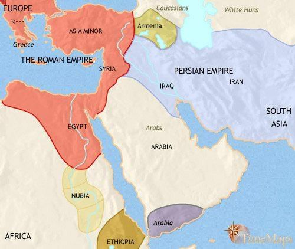
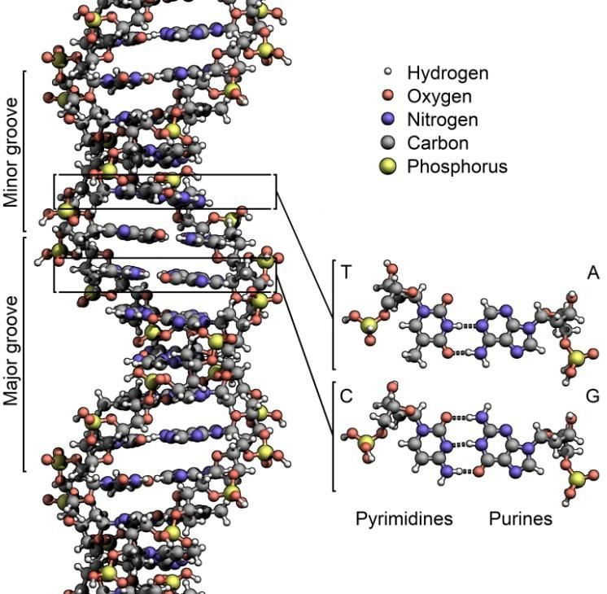

Part-2, Hudan lil Nas [Guidance for Mankind] Chapter 30 [Al Rum / THE ROMANS] Highlight: Possession of satan jinn, Signs, and Dooms Day
পার্ট-২, হুদান লিল নাস [মানবজাতির জন্য নির্দেশিকা] অধ্যায় 30 [আল রুম / দ্য রোমানস] হাইলাইট: শয়তান জিনের দখল, চিহ্ন এবং কিয়ামতের দিন
The Surah talks about the possession of satan jinns. It comes up with the convincing signs of Resurrection and Judgment. It gives the clue of Dooms Day.
সূরাটি শয়তান জিনদের দখলের কথা বলে। এটি পুনরুত্থান এবং বিচারের বিশ্বাসযোগ্য লক্ষণ নিয়ে আসে। এটা ডুমস ডে এর ইঙ্গিত দেয়।
Tafsir of the Surah Section 1 of Chapter 30 [Verse 1]: Sign of Lawh-Mahfuz
সূরা 30 অধ্যায়ের 1 অনুচ্ছেদের তাফসির [আয়াত 1]: লহ-মাহফুজের চিহ্ন
Alif, Lam, Mim Section 2 of Chapter 30 [Verse 2-8]: A short term Prophecy
আলিফ, লাম, মীম অধ্যায়ের 30 অধ্যায় 2 [আয়াত 2-8]: একটি স্বল্পমেয়াদী ভবিষ্যদ্বাণী
The Roman Empire has been defeated in a land close by, but they, after defeat of theirs, will soon be victorious; within a few years. With God is the Decision in the past and in the future: on that Day shall the Believers rejoice with the help of God. He helps whom He wills, and He is Exalted in Might, Most Merciful.
রোমান সাম্রাজ্য কাছাকাছি একটি দেশে পরাজিত হয়েছে, কিন্তু তারা, তাদের পরাজয়ের পর, শীঘ্রই বিজয়ী হবে; কয়েক বছরের মধ্যে। অতীত ও ভবিষ্যতের ফয়সালা আল্লাহ্র কাছে। সেদিন মুমিনগণ আল্লাহ্র সাহায্যে আনন্দিত হবে। তিনি যাকে ইচ্ছা সাহায্য করেন এবং তিনি পরাক্রমশালী, পরম দয়ালু।
Persia was a superpower in ancient times. At the height of its power, the empire extended into Europe and Africa, ruling for hundreds of years. In 336 BCE, Alexander succeeded his father, marking the beginning of European influence in global affairs. Subsequently, the Greeks declined, and the Romans emerged as a dominant force.
প্রাচীনকালে পারস্য ছিল পরাশক্তি। তার ক্ষমতার উচ্চতায়, সাম্রাজ্য ইউরোপ এবং আফ্রিকায় বিস্তৃত হয়েছিল, শত শত বছর ধরে শাসন করেছিল। 336 খ্রিস্টপূর্বাব্দে, আলেকজান্ডার তার পিতার স্থলাভিষিক্ত হন, যা বৈশ্বিক বিষয়ে ইউরোপীয় প্রভাবের সূচনা করে। পরবর্তীকালে, গ্রীকরা হ্রাস পায় এবং রোমানরা একটি প্রভাবশালী শক্তি হিসাবে আবির্ভূত হয়।
FIGURE 30.1: Roman and Persian Empire in 500 CE At the time of Prophet Muhammad (pbuh), the Roman Empire was divided into two parts. The Byzantine Empire controlled much of the Middle East and North Africa, with its capital in Constantinople and forward headquarters in Damascus and Alexandria. The Persians also occupied parts of Arab territory. The Romans were Christians, and during the time of Prophet Muhammad (pbuh), the Persians defeated the Romans in a significant battle. This event became widely discussed among the people of Makkah. The pagans were pleased with the Persian victory, while the Muslims were disappointed, as the defeated Romans followed the religion of Abraham. In response, verses were revealed: "but they, after defeat of theirs, will soon be victorious…" In the verses of the Second Paragraph, the Quran is saying that the believers will rejoice with help of God: "…on that Day shall the Believers rejoice with the help of God." This was a prophecy of the future Muslim victories over the Roman and Persian Empires. However, within a few years, the Romans also achieved a victory over the Persians.

চিত্র 30_1 / Figure 30_1
চিত্র 30.1: রোমান ও পারস্য সাম্রাজ্য 500 খ্রিস্টাব্দে নবী মুহাম্মদ (সা.)-এর সময়ে রোমান সাম্রাজ্য দুটি ভাগে বিভক্ত ছিল। বাইজেন্টাইন সাম্রাজ্য মধ্যপ্রাচ্য এবং উত্তর আফ্রিকার বেশিরভাগ অংশ নিয়ন্ত্রণ করত, যার রাজধানী কনস্টান্টিনোপলে এবং সদর দপ্তর দামেস্ক ও আলেকজান্দ্রিয়ায়। পারস্যরা আরব ভূখণ্ডের কিছু অংশও দখল করে নেয়। রোমানরা খ্রিস্টান ছিল এবং নবী মুহাম্মদ (সা.)-এর সময় পারস্যরা একটি উল্লেখযোগ্য যুদ্ধে রোমানদের পরাজিত করেছিল। এই ঘটনাটি মক্কাবাসীদের মধ্যে ব্যাপকভাবে আলোচিত হয়ে ওঠে। পৌত্তলিকরা পারস্যের বিজয়ে খুশি হয়েছিল, অন্যদিকে মুসলমানরা হতাশ হয়েছিল, কারণ পরাজিত রোমানরা আব্রাহামের ধর্ম অনুসরণ করেছিল। জবাবে, আয়াত নাজিল হয়েছিল: "কিন্তু তারা, তাদের পরাজয়ের পরে, শীঘ্রই বিজয়ী হবে..." দ্বিতীয় অনুচ্ছেদের আয়াতে, কুরআন বলছে যে বিশ্বাসীরা ঈশ্বরের সাহায্যে আনন্দ করবে: "...সেদিন বিশ্বাসীরা ঈশ্বরের সাহায্যে আনন্দ করবে।" এটি ছিল রোমান ও পারস্য সাম্রাজ্যের উপর ভবিষ্যতের মুসলিম বিজয়ের ভবিষ্যদ্বাণী। যাইহোক, কয়েক বছরের মধ্যে, রোমানরাও পারস্যদের উপর বিজয় অর্জন করে।
চিত্র 30_1 / Figure 30_1
The promise of God; never does God depart from His promise, but most men understand not. They know exposed life on Earth, but about the end of things, they are heedless. Do they not reflect in their own minds, not but for just ends and for a term appointed did God create the Skies and Lands and all between them? Yet are there truly many among men who deny the meeting with their Lord! Section-3 of Chapter 30 [Verse 9-27]: Ending in Evil (Asau i-sua)
ঈশ্বরের প্রতিশ্রুতি; ঈশ্বর কখনই তাঁর প্রতিশ্রুতি থেকে সরে যান না, কিন্তু অধিকাংশ মানুষ বোঝে না। তারা পৃথিবীতে উদ্ভাসিত জীবন জানে, কিন্তু জিনিসের শেষ সম্পর্কে তারা উদাসীন। তারা কি নিজেদের মনে চিন্তা করে না, কিন্তু শুধু শেষের জন্য এবং নির্দিষ্ট সময়ের জন্য আল্লাহ আকাশ ও ভূমি এবং তাদের মধ্যবর্তী সবকিছু সৃষ্টি করেছেন? তবুও মানুষের মধ্যে এমন অনেকেই আছে যারা তাদের পালনকর্তার সাথে সাক্ষাৎকে অস্বীকার করে! অধ্যায় 30 এর ধারা-3 [আয়াত 9-27]: মন্দে শেষ (আসাউ ই-সুয়া)
Do they not travel through the earth and see what the end of those before them was? They were superior to them in strength; they tilled the soil and populated it in greater numbers than these have done. There came to them their apostles with Clear (Signs). It was not God Who wronged them, but they wronged their own souls. Then was end of those decay in the evil (asauusua), for that they rejected the verses of God and held them up to ridicule. It is God Who begins creation then repeats it; then shall ye be brought back to Him. On the Day that the Hour will be established, the guilty will be struck dumb with despair. No intercessor they will have among their "Partners" and they will reject their "Partners". On the Day that the Hour will be established that Day (men) shall be sorted out. Then those who have believed and worked righteous deeds shall be made happy in a Mead of Delight. And those who have rejected Faith and falsely denied our Signs and the meeting of the Hereafter such shall be brought forth to Punishment. So, glory to God when ye reach eventide (Maghrib), and when ye rise in the morning (Fazr)—yea to Him be praise in the Skies and Lands—and night (Tahajjud) and when the day begins to decline (Asr). It is He Who brings out the living from the dead and brings out the dead from the living, and Who gives life to the earth after it is dead—and thus shall ye be brought out. Among His Signs in this that He created you from the zygote (turabin), and then, behold, ye are men scattered! And among His Signs is this that He created for you Pairs (Diploid Chromosomes) from among yourselves that ye may dwell in tranquility with them, and He has put love and mercy between your (hearts). Verily, in that are Signs for those who reflect. And among His Signs is the creation of the Skies and Lands, and the variations in your languages and your colors. Verily, in that are Signs for those who know. And among His Signs is the sleep that ye take by night and by day, and the quest that ye (make) out of His Bounty. Verily, in that are signs for those who hearken. And among His Signs, He shows you the lightning by way both of fear and of hope, and He sends down rain from the sky, and with it gives life to the earth after it is dead. Verily, in that are Signs for those who are wise. And among His Signs is this that ‗Sky and Land‘ stand by His Command. Then when He calls you by a single call from the earth, behold, ye come forth. To Him belongs every being that is in the Skies and Lands (Universe); all are devoutly obedient to Him. It is He Who begins the creation then repeats it, and for Him it is most easy. To Him belongs the loftiest similitude in the Skies and Lands; for He is Exalted in Might, full of Wisdom.
তারা কি পৃথিবীতে ভ্রমণ করে না এবং দেখে না যে তাদের পূর্ববর্তীদের পরিণাম কি হয়েছে? তারা শক্তিতে তাদের চেয়ে উন্নত ছিল; তারা মাটি চাষ করেছে এবং তাদের চেয়ে বেশি সংখ্যায় জনবসতি করেছে। তাদের কাছে তাদের রসূলগণ স্পষ্ট নিদর্শন নিয়ে এসেছিলেন। ঈশ্বর তাদের প্রতি অন্যায় করেননি, কিন্তু তারা নিজেদের আত্মার প্রতি জুলুম করেছিল। অতঃপর মন্দের (আসাউসুয়া) ক্ষয় শেষ হয়েছিল, কারণ তারা ঈশ্বরের আয়াতকে প্রত্যাখ্যান করেছিল এবং তাদের উপহাস করেছিল। ঈশ্বরই সৃষ্টির সূচনা করেন তারপর পুনরাবৃত্তি করেন; অতঃপর তোমাদেরকে তাঁর কাছে ফিরিয়ে আনা হবে। যেদিন কিয়ামত সংঘটিত হবে, সেদিন অপরাধীরা হতাশ হয়ে পড়বে। তাদের "অংশীদারদের" মধ্যে তাদের কোন সুপারিশকারী থাকবে না এবং তারা তাদের "অংশীদারদের" প্রত্যাখ্যান করবে। যেদিন কেয়ামত সংঘটিত হবে সেদিন (মানুষ) সাজানো হবে। অতঃপর যারা ঈমান এনেছে এবং সৎকাজ করেছে তারা আনন্দের ময়দানে খুশি হবে। আর যারা ঈমানকে প্রত্যাখ্যান করেছে এবং আমাদের নিদর্শনাবলী ও আখেরাতের সাক্ষাৎকে মিথ্যা বলেছে তাদেরকে শাস্তির মুখোমুখি করা হবে। সুতরাং, যখন আপনি সন্ধ্যায় (মাগরিব) পৌঁছান, এবং যখন আপনি সকালে (ফজর) উঠবেন - হ্যাঁ আকাশ ও জমিনে তাঁর প্রশংসা হোক - এবং রাত্রি (তাহাজ্জুদ) এবং যখন দিন (আছর) শুরু হয় তখন আল্লাহর প্রশংসা করুন। তিনিই জীবিতকে মৃত থেকে বের করেন এবং জীবিত থেকে মৃতকে বের করেন এবং তিনিই পৃথিবীকে মৃতের পর জীবন দান করেন এবং এভাবেই তোমাদেরকে বের করা হবে। এতে তাঁর নিদর্শনাবলীর মধ্যে রয়েছে যে, তিনি তোমাদেরকে জাইগোট (তুরাবিন) থেকে সৃষ্টি করেছেন, অতঃপর দেখ, তোমরা বিক্ষিপ্ত মানুষ! আর তাঁর নিদর্শনাবলীর মধ্যে এই যে, তিনি তোমাদের জন্য তোমাদের মধ্য থেকে জোড়া (ডিপ্লয়েড ক্রোমোজোম) সৃষ্টি করেছেন যাতে তোমরা তাদের সাথে শান্তিতে থাকতে পার এবং তিনি তোমাদের (হৃদয়) মধ্যে প্রেম ও করুণা স্থাপন করেছেন। নিশ্চয় এতে চিন্তাশীলদের জন্য নিদর্শন রয়েছে। আর তাঁর নিদর্শনসমূহের মধ্যে রয়েছে আকাশ ও ভূমির সৃষ্টি এবং তোমাদের ভাষা ও বর্ণের বৈচিত্র্য। নিশ্চয় এতে নিদর্শন রয়েছে তাদের জন্য যারা জানে। আর তাঁর নিদর্শনাবলীর মধ্যে রয়েছে রাত ও দিনে যে ঘুম তোমরা গ্রহণ কর এবং তাঁর অনুগ্রহ থেকে যে অনুসন্ধান কর। নিশ্চয়ই এতে নিদর্শন রয়েছে যারা শোনে তাদের জন্য। আর তাঁর নিদর্শনসমূহের মধ্যে, তিনি তোমাদেরকে ভয় ও আশার উভয় পথে বিদ্যুৎ দেখান এবং তিনি আকাশ থেকে বৃষ্টি বর্ষণ করেন এবং তা দিয়ে পৃথিবীকে মৃতের পর জীবন দান করেন। নিশ্চয় এতে জ্ঞানীদের জন্য নিদর্শন রয়েছে। আর তাঁর নিদর্শনগুলোর মধ্যে এই যে, ‘আকাশ ও ভূমি’ তাঁর নির্দেশে দাঁড়িয়ে আছে। অতঃপর যখন তিনি তোমাদেরকে পৃথিবী থেকে এক ডাকে ডাকেন, তখন তোমরা বের হয়ে আসো। আকাশ ও ভূমিতে (মহাবিশ্ব) প্রত্যেকটি সত্তা তাঁরই; সকলেই তাঁর প্রতি আনুগত্যশীল। তিনিই সৃষ্টির সূচনা করেন, অতঃপর তার পুনরাবৃত্তি করেন এবং তাঁর জন্য এটি সবচেয়ে সহজ। আকাশ ও ভূমিতে উচ্চতম উপমা তাঁরই। কারণ তিনি পরাক্রমশালী, জ্ঞানে পরিপূর্ণ।
He does propound to you a similitude from your own (experience): Do ye have partners among those whom your right hands possess (slaves) to share as equals in the wealth We have bestowed on you? Do ye fear them as ye fear each other? Thus, do we explain the Signs in detail to a people that understand. Nay, the wrongdoers follow their own lusts being devoid of knowledge. But who will guide those whom God leaves astray? To them there will be no helpers. So, set thou thy face steadily and truly to the Faith. God's handiwork, according to the pattern on which He has made mankind—no change in the work by God; that is the established system; but most among mankind understand not.
তিনি আপনার নিজের (অভিজ্ঞতা) থেকে আপনার কাছে একটি উপমা পেশ করেন: আমরা আপনাকে যে সম্পদ দিয়েছি তাতে সমান অংশীদার হওয়ার জন্য আপনার ডান হাতের অধিকারী (দাসদাস)দের মধ্যে কি আপনার অংশীদার আছে? তোমরা কি তাদের ভয় কর যেমন তোমরা একে অপরকে ভয় কর? সুতরাং, আমরা কি নিদর্শনাবলী বিশদভাবে বর্ণনা করি এমন লোকদের জন্য যারা বোঝে। বরং জালেমরা জ্ঞানহীন হয়ে নিজেদের প্রবৃত্তির অনুসরণ করে। কিন্তু ঈশ্বর যাদের পথভ্রষ্ট করেন তাদের পথ দেখাবে কে? তাদের কোন সাহায্যকারী থাকবে না। সুতরাং, আপনি অবিচলিতভাবে এবং সত্য বিশ্বাসের দিকে আপনার মুখ রাখুন। ঈশ্বরের হস্তকর্ম, যে নমুনা অনুসারে তিনি মানবজাতিকে তৈরি করেছেন—ঈশ্বরের কাজের কোনো পরিবর্তন হয়নি; এটাই প্রতিষ্ঠিত ব্যবস্থা; কিন্তু অধিকাংশ মানুষ বোঝে না।
In above paragraph, the word, ―God's handiwork, according to the pattern on which He has made mankind…‖ refers to the DNA codes that form living creatures. This is Allah‘s handiwork—so remarkable that no angel or created system could produce it. The subsequent part of the word, ―…no change in the work by God; that is the established system…‖ indicates that humans were created from the same double helix DNA molecule that forms the basis of all plants and animals.
উপরের অনুচ্ছেদে, "ঈশ্বরের হস্তকর্ম, যে প্যাটার্ন অনুসারে তিনি মানবজাতিকে তৈরি করেছেন..." শব্দটি DNA কোডগুলিকে বোঝায় যা জীবিত প্রাণীদের গঠন করে। এটি আল্লাহর হাতের কাজ- এতটাই অসাধারণ যে কোন ফেরেশতা বা সৃষ্ট সিস্টেম এটি তৈরি করতে পারেনি। শব্দের পরবর্তী অংশ, -... ঈশ্বরের দ্বারা কাজের কোন পরিবর্তন নেই; এটাই হল প্রতিষ্ঠিত ব্যবস্থা...‖ ইঙ্গিত করে যে মানুষ একই ডাবল হেলিক্স ডিএনএ অণু থেকে তৈরি হয়েছিল যা সমস্ত উদ্ভিদ এবং প্রাণীর ভিত্তি তৈরি করে।
―Glory to God Who created all things that the earth produces as well as their own kind and things of which they have no knowledge, from the Pairs (double helix DNA molecule)‖ [Al Quran 36:36]
"আল্লাহর মহিমা যিনি পৃথিবী থেকে যা কিছু উৎপন্ন করে, সেইসাথে তাদের নিজস্ব প্রকারের এবং যা সম্পর্কে তাদের কোন জ্ঞান নেই, জোড়া (ডাবল হেলিক্স ডিএনএ অণু) থেকে সৃষ্টি করেছেন।" [আল কুরআন 36:36]
It is possible that when Allah intended to create Adam, He did not create an entirely new DNA structure. Instead, He may have used the double helix DNA sequence from an ape-like creature and incorporated human qualities into its genome. While humans and chimps share 98.8 percent of their DNA, they are vastly different due to significant differences in their genome codes.
এটা সম্ভব যে আল্লাহ যখন আদমকে সৃষ্টি করতে চেয়েছিলেন, তখন তিনি সম্পূর্ণ নতুন ডিএনএ কাঠামো তৈরি করেননি। পরিবর্তে, তিনি একটি বানর-সদৃশ প্রাণী থেকে ডাবল হেলিক্স ডিএনএ সিকোয়েন্স ব্যবহার করেছেন এবং এর জিনোমে মানবিক গুণাবলী অন্তর্ভুক্ত করেছেন। যদিও মানুষ এবং শিম্পরা তাদের ডিএনএর 98.8 শতাংশ ভাগ করে নেয়, তবে তাদের জিনোম কোডে উল্লেখযোগ্য পার্থক্যের কারণে তারা ব্যাপকভাবে আলাদা।
FIGURE 30.2: DNA Double Helix

চিত্র 30_2 / Figure 30_2
চিত্র 30.2: DNA ডাবল হেলিক্স
চিত্র 30_2 / Figure 30_2
However, Allah created Adam independently, not within the womb of an animal. It is possible that Allah formed a zygote for Adam and nurtured its development. Adam then grew and was placed in Jannaat to live. Allah has given the nafs (composite soul), which develops along with the human body in the mother's womb, during earthly life, and in Illiyin or Sijjin. The nafs is designed and programmed to guide its resurrection. But, one who turns away from faith may be possessed by a jinn, leading to the deformation of the nafs. The jinn corrupts the nafs, causing it to decay in evil. Such a person will be resurrected in a deformed state, becoming a genetically altered version of a universal creature. After the Final Judgment, they will remain in this universe (Samawaat), which, following the Judgment, becomes hell. ―So, set thou thy face steadily and truly to the Faith…‖
যাইহোক, আল্লাহ আদমকে স্বাধীনভাবে সৃষ্টি করেছেন, পশুর গর্ভে নয়। এটা সম্ভব যে আল্লাহ আদমের জন্য একটি জাইগোট গঠন করেছেন এবং এর বিকাশকে লালন করেছেন। এরপর আদম বড় হয় এবং তাকে জান্নাতে রাখা হয়। আল্লাহ নফস (যৌগিক আত্মা) দিয়েছেন, যা মাতৃগর্ভে, পার্থিব জীবনে এবং ইল্লিয়িন বা সিজ্জিনে মানবদেহের সাথে বিকাশ লাভ করে। নফস এর পুনরুত্থানের নির্দেশনা দেওয়ার জন্য ডিজাইন এবং প্রোগ্রাম করা হয়েছে। কিন্তু, যে ব্যক্তি ঈমান থেকে দূরে সরে যায় সে একটি জিন দ্বারা আবিষ্ট হতে পারে, যা নফসের বিকৃতির দিকে পরিচালিত করে। জিনরা নফসকে কলুষিত করে, যার ফলে তা মন্দতায় ক্ষয়প্রাপ্ত হয়। এই ধরনের একজন ব্যক্তি একটি বিকৃত অবস্থায় পুনরুত্থিত হবে, একটি সার্বজনীন প্রাণীর জিনগতভাবে পরিবর্তিত সংস্করণ হয়ে উঠবে। চূড়ান্ত বিচারের পরে, তারা এই মহাবিশ্বে (সামাওয়াত) থাকবে, যা বিচারের পরে জাহান্নামে পরিণত হয়। "অতএব, আপনি অবিচলিতভাবে এবং সত্যই বিশ্বাসের দিকে মুখ করুন..."
Turn ye back in repentance to Him and guard against Him. Establish salat and be not ye among those who join gods with God, those who split up their Religion and become Sects—each party rejoicing in that which is with itself! When trouble touches men, they cry to their Lord turning back to Him in repentance. But when He gives them a taste of Mercy as from Himself, behold, some of them pay part- worship to other god's besides their Lord to show their ingratitude for the (favors) We have bestowed on them! Then enjoy, but soon will ye know. Or have We sent down authority to them, which points out to them the things to which they pay part-worship? When We give men a taste of Mercy, they exult thereat, and when some evil afflicts them because of what their hands have sent forth, behold, they are in despair! See they not that God enlarges the provision and restricts it to whomsoever He pleases? Verily, in that are Signs for those who believe. So, give what is due to kindred, the needy, and the wayfarer. That is best for those who seek the countenance of God, and it is they who will prosper. That, which ye lay out for increase through the property of people will have no increase with God, but that, which ye lay out for charity seeking the countenance of God—it is these who will get a recompense multiplied. It is God Who has created you, further He has provided for your sustenance, then He will cause you to die, and again He will give you life. Are there any of your "Partners" who can do any single one of these things? Glory to Him! And high is He above the partners they attribute! Mischief has appeared on land and sea because of that the hands of men have earned; that (God) may give them a taste of some of their deeds in order that they may turn back. Say: "Travel through the earth and see what was the end of those before. Most of them worshipped others besides God." But set thou thy face to the right Religion before there come from God the Day, which there is no chance of averting. On that Day shall men be divided; those who reject Faith will suffer from that rejection, and those who work righteousness will spread their couch for themselves; that He may reward those who believe and work righteous deeds out of his Bounty. Indeed, He loves not those who reject Faith.
তোমরা তাঁর দিকে ফিরে যাও এবং তাঁর থেকে সাবধান হও। নামায কায়েম কর এবং তোমরা তাদের অন্তর্ভুক্ত হয়ো না যারা আল্লাহর সাথে উপাস্যকে শরীক করে, যারা তাদের ধর্মকে বিচ্ছিন্ন করে এবং দলে দলে পরিণত হয়- প্রত্যেক দল নিজেদের মধ্যে যা আছে তাতেই আনন্দ করে! যখন মানুষকে কষ্ট স্পর্শ করে, তারা তাদের প্রভুর কাছে কান্নাকাটি করে অনুতাপে ফিরে আসে। কিন্তু যখন তিনি তাদের নিজের পক্ষ থেকে রহমতের স্বাদ দান করেন, তখন দেখ, তাদের মধ্যে কেউ কেউ তাদের পালনকর্তাকে বাদ দিয়ে অন্য উপাস্যের উপাসনা করে, যাতে আমরা তাদের দিয়েছি (অনুগ্রহের) প্রতি তাদের অকৃতজ্ঞতা প্রকাশ করতে! অতঃপর উপভোগ কর, তবে শীঘ্রই জানতে পারবে। নাকি আমি তাদের কাছে কোন প্রমাণ নাযিল করেছি, যা তাদের কাছে নির্দেশ করে যে তারা আংশিক ইবাদত করে? যখন আমি মানুষকে রহমতের স্বাদ আস্বাদন করি, তখন তারা তাতে উল্লাসিত হয় এবং তাদের হাত যা পাঠিয়েছে তার কারণে যখন তাদের কোন অনিষ্ট হয়, তখন তারা হতাশ হয়ে পড়ে! তারা কি দেখে না যে, ঈশ্বর রিযিক প্রশস্ত করেন এবং যার জন্য ইচ্ছা সীমিত করেন? নিঃসন্দেহে এতে নিদর্শন রয়েছে বিশ্বাসীদের জন্য। অতএব, আত্মীয়-স্বজন, অভাবগ্রস্ত ও মুসাফিরদের জন্য যা প্রাপ্য তা দান করুন। এটা তাদের জন্য সর্বোত্তম যারা আল্লাহর মুখাপেক্ষী এবং তারাই সফলকাম হবে। যা তোমরা মানুষের সম্পত্তির মাধ্যমে বৃদ্ধির জন্য রেখেছ তা ঈশ্বরের কাছে কোন বৃদ্ধি পাবে না, কিন্তু যা তোমরা ঈশ্বরের মুখ দেখার জন্য দানের জন্য রেখেছ- তারাই বহুগুণ বেশি প্রতিদান পাবে। তিনিই আল্লাহ যিনি আপনাকে সৃষ্টি করেছেন, তিনি আপনার রিযিকের ব্যবস্থা করেছেন, তারপর তিনি আপনাকে মৃত্যু ঘটাবেন এবং আবার তিনি আপনাকে জীবন দান করবেন। আপনার "অংশীদারদের" মধ্যে কি এমন কেউ আছেন যিনি এই জিনিসগুলির যেকোনো একটি করতে পারেন? তাঁর মহিমা! এবং তিনি তাদের অংশীদারদের উর্ধ্বে! মানুষের হাতের উপার্জনের কারণে স্থলে ও সমুদ্রে ফাসাদ দেখা দিয়েছে; যাতে (আল্লাহ) তাদেরকে তাদের কিছু কর্মের আস্বাদন করান যাতে তারা ফিরে যেতে পারে। বলুনঃ পৃথিবীতে ভ্রমণ কর এবং দেখ পূর্ববর্তীদের পরিণাম কি হয়েছে। তাদের অধিকাংশই আল্লাহ ব্যতীত অন্যদের উপাসনা করত। কিন্তু ঈশ্বরের পক্ষ থেকে এমন দিন আসার আগে আপনি সঠিক ধর্মের দিকে মনোনিবেশ করুন, যাকে এড়ানোর কোনো সুযোগ নেই। সেদিন মানুষ বিভক্ত হবে; যারা বিশ্বাসকে প্রত্যাখ্যান করবে তারা সেই প্রত্যাখ্যানের শিকার হবে এবং যারা সৎ কাজ করবে তারা নিজেদের জন্য তাদের পালঙ্ক বিছিয়ে দেবে; যাতে তিনি তাঁর অনুগ্রহে যারা ঈমান আনে ও সৎকাজ করে তাদের প্রতিদান দেন। প্রকৃতপক্ষে, তিনি বিশ্বাসকে প্রত্যাখ্যানকারীদের ভালবাসেন না।
Among His Signs is this that He sends the Winds as heralds of Glad Tidings giving you a taste of His Mercy that the ships may sail by His Command and that ye may seek of His Bounty in order that ye may be grateful. Remarks:
তাঁর নিদর্শনসমূহের মধ্যে এই যে, তিনি সুসংবাদের বার্তাবাহক হিসেবে বাতাস প্রেরণ করেন, যাতে তিনি তোমাদেরকে তাঁর রহমতের স্বাদ পান, যাতে জাহাজগুলি তাঁর আদেশে চলতে পারে এবং যাতে তোমরা কৃতজ্ঞতা প্রকাশ করতে পারো। মন্তব্য:
The Surah begins by addressing the Romans. For them, and indeed for the people of all Western Europe, sailing ships were the lifeline. In ancient times, winds and currents dictated the trade routes.
সূরাটি শুরু হয়েছে রোমানদের উদ্দেশ্য করে। তাদের জন্য, এবং প্রকৃতপক্ষে সমস্ত পশ্চিম ইউরোপের লোকেদের জন্য, পালতোলা জাহাজ ছিল লাইফলাইন। প্রাচীনকালে, বাতাস এবং স্রোত বাণিজ্য রুটগুলিকে নির্দেশ করত।